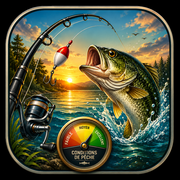

Score Pêche
Analyse météo, prises et historique hors ligne
Analyse
Espèce recherchée
Brochet
Sandre
Perche
Gardon
Carassin
Carpe
Truite
Chevesne
Goujon
Aspe
📍 Analyser ma position
🎯 Utiliser mon dernier spot
Lance une analyse pour voir ton score de pêche.
Ma session
🎣 J’ai pris du poisson
✕ Rien aujourd’hui
Statistiques
Chargement des statistiques...
Historique
Aucune session enregistrée.
↩️ Restaurer mon historique du jour
🗑️ Effacer tout l’historique
⌂
Accueil
◴
Historique
▮
Stats